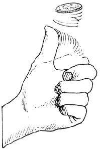
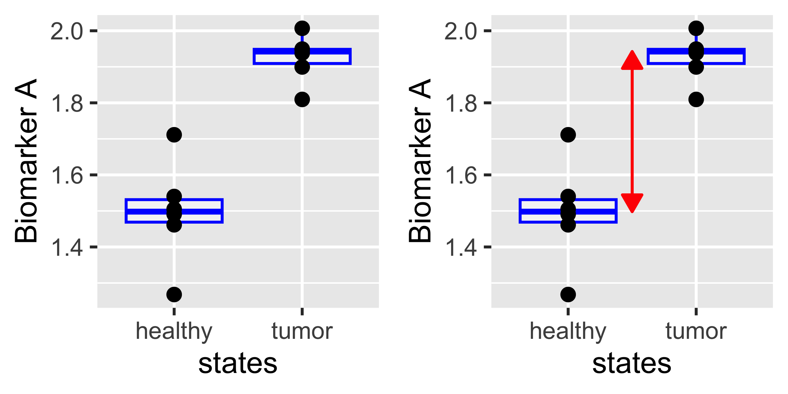
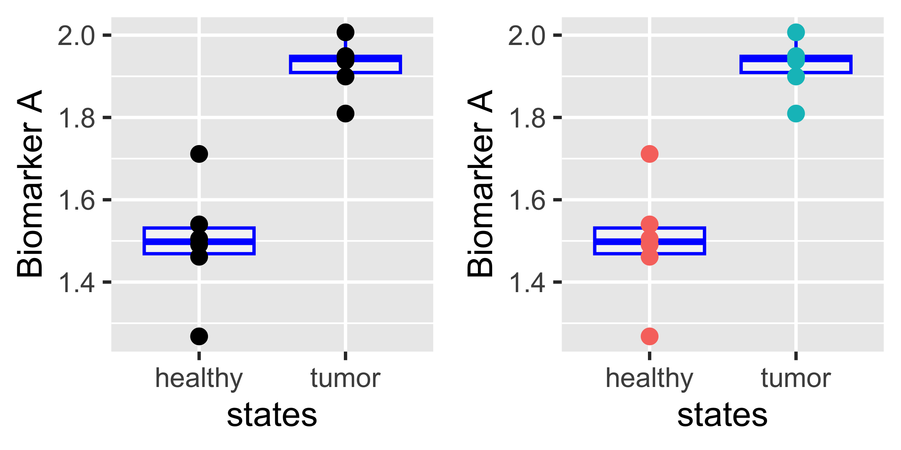
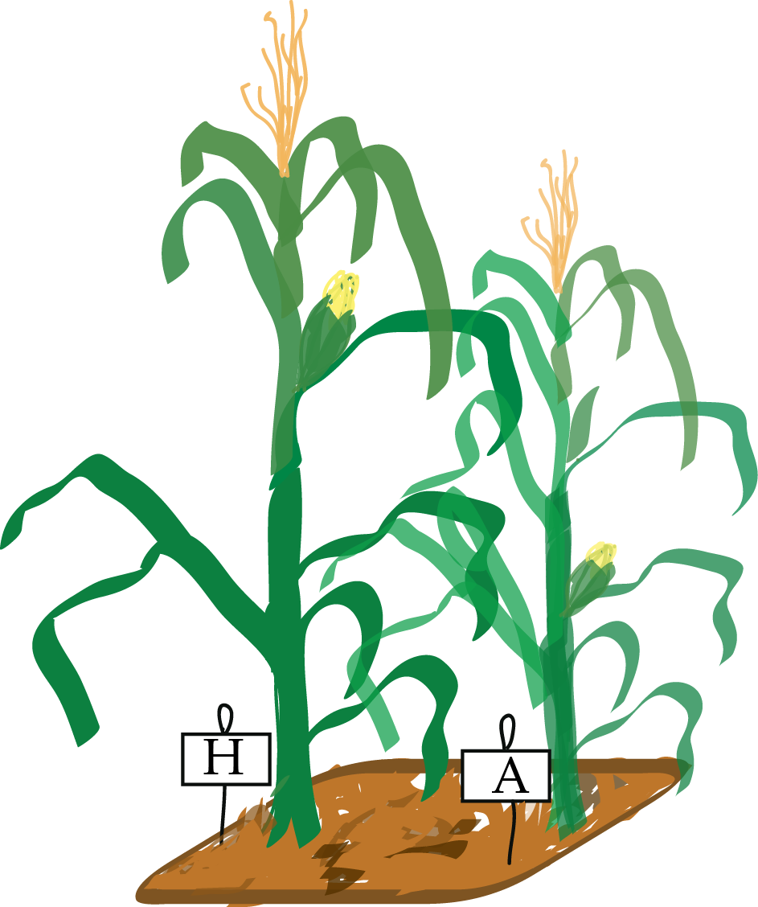
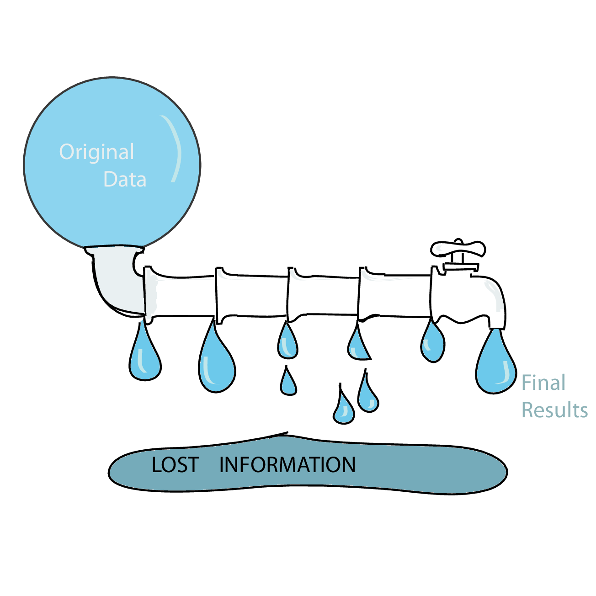

To consult the statistician after an experiment is finished is often merely to ask him to conduct a post mortem examination. He can perhaps say what the experiment died of.
(Presidential Address to the First Indian Statistical Congress, 1938. Sankhya 4, 14-17).
Goals for this Lecture
Resource allocation and experimental design: an iterative process.
Dealing with the different types of variability; partitioning variability
Transformations
Types of experiments, studies, …
Power, sample size and efficiency.
Things to worry about: dependencies, batch effects, unwanted variation.
Compression, redundancy and sufficiency
Computational best practices
The Art of “Good Enough”
Experimental design rationalizes the tradeoffs imposed by having finite resources.
Our measurement instruments have limited resolution and precision; often we don’t know these at the outset and have to collect preliminary data providing estimates.
Sample sizes are limited for practical, economic, and sometimes ethical reasons.
We may only be able to observe the phenomenon of interest indirectly rather than directly.
Our measurements may be overlaid with nuisance factors over which we have limited control.
There is little point in prescribing unrealistic ideals: we need to make pragmatic choices that are feasible.
Types of studies / experiments
Experiment
everything is exquisitely controlled
Retrospective observational studies
we take what we get, opportunistic; no control over study participants, assignment of important factors, confounding
Prospective, controlled studies
e.g. clinical trials
randomization, blinding
ethical constraints (incl. money and time).
Meta-analysis
We did not design the experiments or studies ourselves, nor collect the data.
Retrospective analysis of data that already happen to exist.
Illustration: experiment
Well-characterized cell line growing in laboratory conditions on defined media, temperature and atmosphere.
We administer a precise amount of a drug, and after 72h we measure the activity of a specific pathway reporter.
Illustration: challenges with studies
We recruited 200 patients that have a disease, fulfill inclusion criteria (e.g. age, comorbidities, mental capacity) and ask them to take a drug each day exactly at 6 am. After 3 months, we take an MRI scan and lots of other biomarkers to see whether and how the disease has changed or whether there were any other side effects.
People may forget to take the pill or take it at the wrong time.
Some may feel that the disease got worse and stop taking the drug.
Some may feel that the disease got better and stop taking the drug.
Some may lead a healthy life-style, others eat junk food.
They have varying levels of disease to start with.
And all of these factors may be correlated with each other in unpredictable ways.
What to do about this?
Examples
We modeled the sampling noise in RNA-seq and 16S rRNA with a Gamma-Poisson distribution.
We estimated sequencing depth bias with the library size factors.
We modeled sampling biases caused by the two different RNA-Seq protocols in the pasilla data (single-, paired-end) by introducing a blocking factor into our (generalized) linear model.
If the normalization is ‘off’, we can have increased variability between replicates
… and/or apparent systematic differences between different conditions that are not real
\(\to\) false positives, false negatives
What do we want from a good normalization method:
remove technical variation
but keep biological variation
Possible figure of merit?
signal-to-noise ratio
Occam’s razor
William of Ockham
If one can explain a phenomenon without assuming this or that hypothetical entity, there is no ground for assuming it.
One should always opt for an explanation in terms of the fewest possible causes, factors, or variables.
Error models: Noise is in the eye of the beholder
The efficiency of most biochemical or physical processes involving DNA-polymers depends on their sequence content, for instance, occurrences of long homopolymer stretches, palindromes, GC content.
These effects are not universal, but can also depend on factors like concentration, temperature, which enzyme is used, etc.
When looking at RNA-Seq data, should we treat GC content as noise or as bias?
One person’s noise can be another’s bias

We may think that the outcome of tossing a coin is completely random.
If we meticulously registered the initial conditions of the coin flip and solved the mechanical equations, we could predict which side has a higher probability of coming up: noise becomes bias.
We use probabilistic modelling as a method to bring some order into our ignorance – but let’s keep in mind that these models are a reflection of our subjective ignorance, not an objective property of the world.
Biological versus technical replicates
Imagine we want to test whether a weight loss drug works. Which of the following designs is better?
A person is weighed on milligram precision scales, with 20 replicates. He/she follows the diet, and four weeks later, (s)he is weighed again, with 20 replicates. The data are recorded by a specifically trained technician.
5 people weigh themselves on their bathroom scales and self-report the number. Four weeks later, they weigh themselves and report again. So we have 5 replicates.
This example shows the difference between technological versus biological replicates.
Some design decisions in HT biology are similar, if more subtle:
sequencing libraries
cell lines
CRISPR guides
Quiz
For reliable variant calling with current sequencing technology, you need ca. \(30\times\) coverage per genome.
In the 1000 genomes project, the average depth of the data produced was 5.1 for 1,092 individuals. Why was that study design chosen?
What exactly is a technical versus biological replicate?
In fact, the terminology is too simplistic. Error can creep in at many different levels:
different labs,
different operators within one lab,
different technologies they use,
different machines from the same technology,
different variants of the protocol,
different strains, litters, sexes, individual animals
We will use the notion of blocks.
If we know about these nuisance factors and have kept track of them, we can (should) include them explicitely as bias terms in our models.
If we did not keep track, we can try to use latent factor models (SVA, PEER, RUV) to identify them from the data.
A lack of units
Pre-modern measurement systems measured lengths in feet, arms, inches (first joint of an index finger), weights in stones, volumes in multiples of the size of a wine jar, etc.
In the International System of Units: meters, seconds, kilograms, Ampères, … are defined based on universal physical constants. A meter measured by a lab in Australia using one instrument has the same meaning as a meter measured a year later by a lab in Stanford using a different instrument, by a space probe in the Kuiper belt, or ETs on Proxima Cen b.
Measurements in biology are, unfortunately, rarely that comparable.
Often, absolute values are not reported (these would require units), but only fold changes with regard to some local reference.
Even when absolute values exist (e.g., read counts in an RNA-Seq experiment) they usually do not translate into universal units such as molecules per cell or mole per milliliter.
Regular and catastrophic noise
Regular noise can be modelled by simple probability models such as independent normal distributions, Poissons, or mixtures such as Gamma-Poisson or Laplace.
We can use relatively straightforward methods to take noise into account in our data analyses.
The real world is more complicated: measurements can be completely off the scale (a sample swap, a contamination or a software bug), and multiple errors often come together: e.g., a whole microtiter plate went bad, affecting all data measured from it.
Such events are harder to model or even correct for – our best chance to deal with them is data quality assessment, outlier detection and documented removal.
Keeping track: Dailies
A film director will view daily takes, to correct potential lighting, shooting issues before they affect too much footage. It is a good idea not to wait until all the runs of an experiment have been finished before looking at the data.
Intermediate data analyses and visualizations will track eventual unexpected sources of variation in the data and enable you to adjust the protocol.
It is important to be aware of sources of variation as they occur and adjust for them.
RNAi screen example
Basic principles in the design of experiments
Balancing
Avoidance of confounding
Blocking
Randomization
Attention to detail
Clever combinations and balancing: a motivating example
A pharmacist’s balance weighing analogy (Hotelling (1944) and Mood (1946)).
Experimental design aims to maximize the available resources. One strategy is to capitalize on cancellations and symmetries. An interesting example is a weighing scheme devised by Hotelling.
Consider a set of eight objects of unknown weights \(m=(m_1,\ldots,m_8)\).
For our simulation study, we create a vector of true \(m\) randomly.
Suppose our scale has errors distributed normally with a SD of 0.1. We simulate the measurements (incl. individual errors) as follows. We also compute the root of the mean of their squares (RMS) as a measure of overall error.
X_1to8 = m +rnorm(length(m), mean =0, sd =0.1)X_1to8
We saw that the second method had RMS about 3 times smaller than the first. Were we just lucky?
Repeat Hotelling’s weighing experiment B = 10,000 times with different \(m\) and look at the sampling distributions of the variances of the errors in both schemes
Guess at the relationship between the RMS results.
tcoef8 =t(coef8) /8errs =replicate(10000, { m =sample(seq(2, 16, by =2), 8) +round(rnorm(8, 1), 1) X_1to8 = m +rnorm(length(m), mean =0, sd =0.1) err_1to8 = X_1to8 - m Y = coef8 %*% m +rnorm(length(m), mean =0, sd =0.1) mhat = tcoef8 %*% Y err_hotel = mhat - mc(rms(err_1to8), rms(err_hotel)) })library("ggplot2")library("tibble")ggplot(tibble(ratio = errs[1,] / errs[2,]), aes(x =log2(ratio))) +geom_histogram(bins =50)
We say that the second scheme is more efficient than the first by a factor of \(\sqrt{8}\) because the RMS errors generated by the measurement are \(\sqrt{8}\) times lower (\(\log_2\sqrt{8}\approx\) 1.5).
One factor at a time?
Ibn Sina (Avicenna)
Physician Scientist
His Canon of Medicine (1020) lists seven rules of experimental design, including the need for controls and replication, the danger of confounding and the necessity of changing only one factor at a time.
This dogma was overthrown in the 20th century by RA Fisher.
Comparing two levels of one factor: healthy or diseased.
grid.arrange(p0, p0effect, ncol =2)

However, suppose the experiment was done in two “batches”, and we color the data according that:
grid.arrange(p0, p0batch, ncol =2)

We cannot conclude because we are in the presence of confounding.
Now suppose the experiment has higher noise levels, and the same number of points as in the previous study. Then, the sample sizes (2 x 6) is not enough. With the same error and a bigger sample size (2 x 60), it looks better.
grid.arrange(p1, pN1, ncol=2)
The experiment at \(n_1=n_2=6\) is not powerful enough.
t.test(`Biomarker B`~ states, data = batdef)
Welch Two Sample t-test
data: Biomarker B by states
t = -2.7115, df = 9.9937, p-value = 0.02189
alternative hypothesis: true difference in means between group healthy and group tumor is not equal to 0
95 percent confidence interval:
-1.1592407 -0.1133796
sample estimates:
mean in group healthy mean in group tumor
1.549076 2.185387
With the same effect size and a larger sample size, we have the power to see the difference:
t.test(`Biomarker C`~ states_60, data = dfN)
Welch Two Sample t-test
data: Biomarker C by states_60
t = -7.822, df = 116.83, p-value = 2.56e-12
alternative hypothesis: true difference in means between group healthy and group tumor is not equal to 0
95 percent confidence interval:
-0.5516679 -0.3287520
sample estimates:
mean in group healthy mean in group tumor
1.493643 1.933853
Lessons from these toy examples
Success of an experiment: seeing difference if it is truely there.
Knowing where the difference comes from.
True positive rate: power.
Spread (e.g., variances) matters as much as the locations (e.g., means).
Depends on:
Effect size (unchangeable)
Control and documentation of all factors (block effects, date / time / operator etc.).
Noise (variability in measurements)
Sample size: remember the standard error of the mean is \[\frac{\sigma^2}{n}\]
Decomposition of variability: analysis of variance.
Blocking: the case of paired experiments.

ZeaMays
Each pot in Darwin’s Zea Mays experiment is a block, only the factor of interest should be different (pollination method), all other factors should be kept equal within a block. A balanced design is an experimental design where all the different factor combinations have the same number of observation replicates. Such data are particularly easy to analyse because the effect of each factor is identifiable. When there are (likely) nuisance factors, it is good to make sure they are balanced with the factors of interest. Sometimes this is inconvenient or impractical for logistic or economic reasons – but in such cases analysts are on thin ice and need to proceed with caution.|
Comparing paired versus unpaired design
When comparing various possible designs, we do power simulations.
Here, we suppose the sample size is 15 in each group and the effect size is 0.2. We also need to make assumptions about the standard deviations of the measurements, here we suppose both groups have the same sd=0.25.
Perform a simple and a paired \(t\)-test. Which is more powerful in this case?
t.test(hybrid, autoz, paired =FALSE)
Welch Two Sample t-test
data: hybrid and autoz
t = 0.58292, df = 27.908, p-value = 0.5646
alternative hypothesis: true difference in means is not equal to 0
95 percent confidence interval:
-0.6118805 1.0985542
sample estimates:
mean of x mean of y
0.2016872 -0.0416497
t.test(hybrid, autoz, paired =TRUE)
Paired t-test
data: hybrid and autoz
t = 3.3113, df = 14, p-value = 0.005145
alternative hypothesis: true mean difference is not equal to 0
95 percent confidence interval:
0.08572565 0.40094807
sample estimates:
mean difference
0.2433369
Maybe we were just lucky (due to randomness in our simulation) here.
To confirm, run a parametric bootstrap experiment. Generate data as above B=1000 times and compute the average probability of rejection, if allowing for a false positive rate \(\alpha=0.05\).
Make a function that compares the power of the two types of tests for different values of the effect size, sample size, standard deviation among the pots.
Use your function to find out which of the standard deviations (pots or noise) has the largest effect on the improvement produced by pairing for \(n = 15\).
Here are a few examples showing that when the pots sd is smaller than the noise sd, pairing hardly makes a difference. If the pots variability is larger than that of the measurement noise, pairing makes a big difference.
powercomparison(potsd =0.5, noisesd =0.25)
FALSE TRUE
0.037 0.515
powercomparison(potsd =0.25, noisesd =0.5)
FALSE TRUE
0.134 0.175
powercomparison(potsd =0.25, noisesd =0.1)
FALSE TRUE
0.511 0.998
powercomparison(potsd =0.1, noisesd =0.25)
FALSE TRUE
0.472 0.510
For 100 plants of each type and the two SDs being 0.5, the power of the paired test is nearly 80%.
powercomparison(potsd =0.5, noisesd =0.5, n =100)
FALSE TRUE
0.512 0.787
Lesson: take into account a natural pairing of the observations – for instance, studies of patients before and after a treatment.
What can be done when pairing is not available?
Try to create pairs of subjects that have as much similarity as possible through matching age, gender (sex), background health etc. One is treated, the other serves as a control.
“Block what you can, randomize what you cannot”
(George Box, 1978)
Often we don’t know which nuisance factors will be important, or we cannot plan for them ahead of time.
In such cases, randomization is a practical strategy: at least in the limit of large enough sample size, the effect of any nuisance factor should average out.
Randomized Complete Block Design
“The design space is divided into uniform units to account for any variation so that observed differences within units are largely due to true differences between treatments. Treatments are then assigned at random to the subjects in the blocks - once in each block. The defining feature of the Randomized Complete Block Design is that each block sees each treatment exactly once.” (Trudi Grant)
Balanced Incomplete Block Design
Complete Factorial Latin Squares
sudoku anyone?
(Latin square: n × n array filled with n different symbols, each occurring exactly once in each row and exactly once in each column)
Randomization decreases bias
Humans are bad at assigning treatments truly at random
Random assignment reduces unconscious bias (special samples treated differently, “balancing things out”, …)
Randomization also helps with unknown nuisance factors.
Randomization helps inference
if the sample is randomly generated from a population, we can infer something about the population we drew from
Random does not mean haphazardly
Need to use a random number generator and a seed.
Controls, positive and negative: why?
We often need to remove variation due to unknown factors, or decompose variability according to its different sources; this is classically done using analysis of variance that can accomodatefactors such as subject or batch effects.
Usually these decompositions require at least 3 replicate measurements in each cell.
Removal of effects from unknown sources can only be done through the use of negative controls.
Calibration of the effect size in an experiment also requires the use of positive controls; spike-ins (for instance External RNA Control Consortium controls as used in Risso et al. (2014)) where a known quantity or a known expression level aid in these calibrations and are a standard part of many experimental protocols.
Validation in independent data / independent lines of argument
We saw how we can use preliminary data and simulations to calculate how many replicates are needed to achieve, say, a 80% true positive rate, if we know the effect size.
Now, recall the discussion of experiments versus studies.
For the cell line experiment, we might get the correct result already from one replicate; usually we’ll do two or three to be sure.
On the other hand, for the study, our intuition tells us that there is so much uncontrolled variability that 20 is likely far too few, and we may need 200 or 2,000 patients for a reliable result. The number depends on the amount of uncontrolled variability, and the effect size. A pragmatic approach is to check out previous successful (or unsuccessful) experiments or studies that did something comparable and use simulations, subsampling or bootstrapping to get an estimate of our proposed new study’s power. Here are more details about how to go about this in practice.
Power depends on sample sizes, effect sizes and variability.
Example of two batches with different variability.
Examples of one treatment where the variance is larger.
Need to accomodate heteroscedasticity (unequal variances) with different sample sizes.
Effective sample size for dependent data.
Dependent data require larger samples (intuition: each sample contains less information)
A sample of independent observations is more informative than the same number of dependent observations.
Suppose you want to do an opinion poll by knocking at people’s doors and asking them a question.
Scenario 1: pick \(n\) people at \(n\) random places throughout the country.
Scenario 2: to save travel time, you pick \(n/3\) random places and then at each of these interview three people who live next door to each other.
In both cases, the number of people polled is \(n\), but if we assume that people living in the same neighborhood are more likely to have the same opinion, the data from Scenario 2 are (positively) correlated. To explore this, let’s do a simulation.
Density estimates for the polling result using the two sampling methods. The correlated method has higher spread. The truth is indicated by the vertical line.
There are 100 people in the country, of which in the first approach (i1) we randomly sample 12. In the second approach, we sample 4 people as well as two neighbors for each (i2). The opinion in our case is a real number, normally distributed in the population with mean 0 and standard deviation 1.
We model the spatio-sociological structure of our country by sorting the houses from most negative to most positive opinion in the first line of the doPoll function.
Time course: equalize the dependence structure by taking more frequent samples when there is more “going on”.
Response to a transient perturbation
Mean-Variance Relationships and Transformations
You’ve seen examples for data transformations that compress or stretch the space of quantitativemeasurements in such a way that the measurements’ noise variance (not: the signal variance) is more similar throughout – i.e., no longer highly dependent on the mean value.
The mean-variance relationship of a measurement technology can in principle be any function, but in many cases, the following prototyic relationships hold:
constant: the variance is independent of the mean (“additive noise”, \(Y=\mu+\varepsilon\))
Poisson: the variance is proportional to to the mean (“shot noise”, \(N\sim\text{Poi}(\mu)\))
quadratic: the standard deviation is proportional to the mean, therefore the variance grows quadratically (“multiplicative noise”, \(Y=\mu \cdot e^\varepsilon\))
Do you know examples for biological assays (or measurement technologies) whose data show these types of relationships?
Real data can also be affected by a combination of these. For instance:
with DNA microarrays, the fluorescence intensities are subject to a combination of background noise that is largely independent of the signal (additive noise), and multiplicative noise whose standard deviation is proportional to the signal (Rocke and Durbin 2001). Therefore, for bright spots the multiplicative noise dominates, whereas for faint ones, the background.
in RNA-Seq, low counts are dominated by Poisson noise, high counts by the multiplicative noise.
We recall from Chapter 5 that for data with a mean-variance relationship \(v(\mu)\) the variance-stabilizing transformation \(g:\mathbb{R}\to\mathbb{R}\) fulfills the condition \[g'(x)=\frac{1}{\sqrt{v(x)}}\]
What are the variance-stabilizing transformations associated with the above three prototypic mean-variance relationships?
What is the variance stabilizing transformation that is appropriate for \(v(\mu) = v_0 + c\,\mu^2\), where \(v_0>0\) is a positive constant?
Data quality assessment and quality control
data quality assessment (QA): steps taken to measure and monitor data quality
data quality control (QC): removing bad data
These pervade all phases of an analysis, from assembling the raw data over transformation, summarization, model fitting, hypothesis testing or screening for ‘’hits’’ to interpretation. QA-related questions include:
How do the marginal distributions of the variables look (histograms, ECDF plots)?
How do their joint distributions look (scatter plots, pairs plot)?
How well do replicates agree (as compared to different biological conditions)? Are the magnitudes of the differences between several conditions plausible?
Is there evidence of batch effects? These could be of a categorical (stepwise) or continuous (gradual) nature, e.g., due to changes in experimental reagents, protocols or environmental factors. Factors associated with such effects may be explicitly known, or unkown and latent; often they are somewhere in between (e.g., when a measurement apparatus slowly degrades over time)
For the last two sets of questions, heatmaps, principal component plots and other ordination plots are useful.
Henry Ford’s (possibly apocryphal) quote: ‘’If I had asked people what they wanted, they would have said faster horses.’’ (https://corporate.ford.com/history.html) expresses the view of quality as fitness for purpose, versus adherence to specifications.
It is not easy to nail down (mathematically define) quality, and the word is used with many meanings. See also http://en.wikipedia.org/wiki/Quality_(business)
Longitudinal Data
Longitudinal data have time as a covariate.
handful of time points (e.g. response of a cell line measured 48h, 72h and 84h after exposure to a drug) vs a long and densely sampled time series (e.g. patch clamp data in electrophysiology or movie from life cell microscopy).
in 1st case, think of time as just another experimental factor, like concentration or choice of drug. One analysis strategy could be to first identify the “best”, or biologically most indicative, time point, and then focus on that. Or whether there is any effect at all, regardless of the time.
in 2nd case, time series, we’ll often want to fit dynamical models to the data. We have many choices:
(Hidden) Markov models
Change point detection
Ordinary differential equations or reaction-diffusion models
Piece-wise deterministic stochastic processes
Autoregressive models
Non-parametric smoothing followed by clustering or classification into prototypic shapes
Don’t Pretend You Are Dumb
There is some attraction to seemingly “unbiased” approaches that analyse the data at hand without any reference to what is already known. Such tendencies are reinforced by the fact that statistical methods have often been developed to be generic, for instance, working of a general matrix without specific reference to what the rows and column might signify.
Generic approaches are a good way to get started, and for analyses that are highly powered and straightforward, such an an approach might work out. But often, it is wasteful. Recall the example of an RNA-Seq experiment for differential expression. As we saw in the RNA-Seq and Hypothesis Testing lectures, we could perform a hypothesis test for differential expression for each annotated gene, regardless of its read counts, and then run a multiple testing method that treats all tests as exchangeable. But this is inefficient - we can improve our detection power by filtering out, or downweighting, the hypotheses with lower test power, or with lower prior probability of being alternative.
Other examples include:
Penalisation or feature selection in high-dimensional regression or classification. It is easy to use schemes that treat all features the same, for instance, standardize all of them to zero mean and unit variance. But sometime we know that some classes of features are likely to be more or less informative than others.
You can also use graphs to represent “other” data (networks) and use approaches like the group or graph lasso to structure your penalties in high-dimensional modelling.
Unsupervised clustering of your objects of interests (samples, genes, etc.) and subsequent search for over-represented annotations. Instead, just check whether the members of groups defined by the annotations are more similar than two randomly picked objects.
Leaky pipelines and statistical sufficiency

Data analysis pipelines in high-throughput biology often work as funnels that successively summarise and compress the data. In high-throughput sequencing, we may start with individual sequencing reads, then align them to a reference, then only count the aligned reads for each position, summarise positions to genes (or other kinds of regions), then “normalize” these numbers by library size, etc.
At each step, we loose some information, and it is important to make sure we still have enough information for the task at hand. The problem is particularly burning if we use a data pipeline built from a series of separate components without enough care being taken ensuring that all the information necessary for ulterior steps is conserved.
Statisticians have a concept for whether certain summaries enable the reconstruction of all the relevant information in the data: sufficiency. E.g., in a Bernoulli random experiment with a known number of trials, \(n\), the number of successes is a sufficient statistic for estimating the probability of success \(p\).
In a 4-state Markov chain (A,C,G,T) such as the one we saw in Lecture 2, what are the sufficient statistics for the estimation of the transition probabilities?
Iterative approaches akin to what we saw when we used the EM algorithm can sometimes help avoid information loss. For instance, when analyzing mass spectroscopy data, a first run guesses at peaks individually for every sample. After this preliminary spectra-spotting, another iteration allows us to borrow strength from the other samples to spot spectra that may have been labeled as noise.
Sharpen Your Tools: Reproducible Research
Analysis projects often begin with a simple script, perhaps to try out a few initial ideas or explore the quality of the pilot data. Then more ideas are added, more data come in, other datasets are integrated, more people become involved. Eventually the paper needs to be written, figures be redone properly, and the analysis be saved for the scientific record and to document its integrity. Here are a few tools that can help with such a process.
Use an integrated development environment.RStudio is a great choice; there are also other platforms such as Emacs or Eclipse.
Use literate programming tools such as Rmarkdown or Jupyter. This is more readable (for yourself and for others) than burying explanations and usage instructions in comments in the source code or in separate README files, in addition you can directly embed figures and tables in these documents. Such documents are often good starting points for the supplementary material of your paper.
Anticipate re-engineering of the data formats and the software. The first version of how you choose to represent the data and structure the analysis workflows will rarely be the best. Don’t be afraid to make a clean cut and redesign them as soon as you notice that you are doing a lot of awkward data manipulations or repetitive steps. This is time well-invested. Sometimes it also helps to unearth bugs.
Reuse existing tools. Don’t reinvent the wheel and rather spend your time on things that are actually new. Before implementing a ‘heuristic’ or a temporary hack that analyses your data in a certain way, spend a couple of minutes researching to see if something like this hasn’t been done before. More often than not, it has, and there is a clean, scalable, and already tested solution.
Use version control, such as git. This takes some time to learn, but in the long run will be infinitely better than all your self-grown attempts at managing evolving code with version numbers, switches and the like. Moreover, this is also the sanest option for collaborative work on code, and it provides an extra backup of your codebase, especially if the server is distinct from your workplace machine.
Use functions rather than copy-pasting stretches of code.
Use the R package system. Soon you’ll note recurring function or variable definitions that you want to share between your individual scripts. It is fine to use the R function to manage them initially, but it is never to early to move them into your own package at the latest when you find yourself starting to write README files or long emails explaining others how to use some script or another. Assembling existing code into an R package is not hard by any means, and offers you many goodies including standardized and convenient ways to provide documentation, to show code usage examples, to test the correct functioning of your code, and to version it. Quite likely you’ll soon appreciate the benefit of using namespaces.
Centralize the location of the raw data files and streamline the derivation of intermediate data. Store the input data at a centralized file server that is professionally backed up. Mark the files as read-only. Have a clear and linear workflow for computing the derived data (e.g., normalised, summarised, transformed etc.) from the raw files, and store these in a separate directory. Anticipate that this workflow will need to be re-run several times, and version it. Use or similar tools to mirror these files on your personal computer.
Integration. When developing downstream analysis ideas that bring together several different data types, you don’t want to do the conversion from data type specific formats to the representations that machine learning or generic statistical methods use each time on an ad hoc basis. Have a recipe script that assembles the different ingredients and cooks them up as an easily consumable matrix, data frame or Bioconductor.
Keep a hyperlinked webpage with an index of all analyses. This is helpful for collaborators (especially if the page and the analysis can be accessed via a web browser) and also a good starting point for the methods part of your paper. Structure it in chronological or logical order, or a combination of both.
Data representation
Combining all the data so it is ready for analysis or visualisation often involves a lot of shuffling around of the data, until they are in the right shape and format for an analytical algorithm or a graphics routine.
Errors can occur, lost labels, lost information: be safe, redundancy is good.
Wide vs long table format
Recall Hiiragi data (for space reasons we print only the first five rows and columns):
This dataframe has columns of data, one for each sample (annotated by the column names). Its rows correspond to the probes, annotated by the probe identifiers. This is an example for a data table in wide format.
In dfl, each row corresponds to exactly one measured value, stored in the column named value. Then there are additional columns that store the associated covariates.
Now suppose we want to store somewhere not only the probe identifiers but also the associated gene symbols.
In dfw, we could stick them as an additional column, and perhaps also throw in the genes’ ENSEMBL identifier for good measure. But now we have a problem: the dataframe now has some columns that represent different samples, and others that refer to information for all samples (the gene symbol and identifier) and we somehow have to know this when interpreting the dataframe. This is what Hadley Wickham calls untidy data.
In contrast, in dfl, we can add these columns, yet still know that each row forms exactly one observation, and all information associated with that observation is in the same row.
Tidy data
In tidy data
each variable forms a column,
each observation forms a row,
each type of observational unit forms a table.
Using tidy data wisely
See also https://www.huber.embl.de/msmb/Chap-Design.html#tidy-data-using-it-wisely
Efficiency (lack of)
Even though there are only 45101 probe-gene symbol relationships, we are storing them 4555201 times in the rows of dfl.
Standardization (lack of)
We may choose to call these columns probeid and geneid, but the next person might call them probe_id and gene_id, or even something completely different. When we find a dataframe that was made by someone else and that contains such-named columns, we may hope, but have no guarantees, that these are valid gene symbols.
Addressing such issues is behind the object-oriented design of the specialized data structures in Bioconductor, such as the class SummarizedExperiment.
Matrices versus dataframes
Representation of the matrix may also simply be more natural and mathematically stringent - e.g., if we want to apply PCA / dimension reduction, or classification.
Summary
There are two types of variation in an experiment or study: those of interest, those that are unwanted.
We usually cannot rid ourselves of all the unwanted variation, but we saw how we can used balanced randomized designs, data transformations.
Reproducible workflows
Open science: make data and code available
Further Reading
Book chapter
Lecture and chapter presented merely a pragmatic introduction to design, there are many book long treatments of the subject that offer detailed advice on setting up experiments: Wu and Hamada (2011); Box, Hunter, and Hunter (1978); Glass (2007)
References
Box, George EP, William G Hunter, and J Stuart Hunter. 1978. Statistics for Experimenters: An Introduction to Design, Data Analysis, and Model Building. John Wiley & Sons.
Fisher, Ronald Aylmer. 1935. The Design of Experiments. Oliver & Boyd.
Glass, David J. 2007. Experimental Design for Biologists. Cold Spring Harbor Laboratory Press.
Hotelling, Harold. 1944. “Some Improvements in Weighing and Other Experimental Techniques.”The Annals of Mathematical Statistics 15 (3): 297–306.
Mood, Alexander M. 1946. “On Hotelling’s Weighing Problem.”The Annals of Mathematical Statistics, 432–46.
Risso, Davide, John Ngai, Terence P Speed, and Sandrine Dudoit. 2014. “Normalization of RNA-Seq Data Using Factor Analysis of Control Genes or Samples.”Nature Biotechnology 32 (9): 896–902.
Rocke, David M, and Blythe Durbin. 2001. “A Model for Measurement Error for Gene Expression Arrays.”Journal of Computational Biology 8 (6): 557–69.
Wu, CF Jeff, and Michael S Hamada. 2011. Experiments: Planning, Analysis, and Optimization. Vol. 552. John Wiley & Sons.